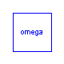
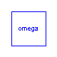

This package contains connectors and interfaces (partial models) for the ASM2d secondary clarifier model based on Otterpohl [1] (two settling velocities for distinction between micro and macro flocs and omega correction function).
Main Author: Gerald Reichl Technische Universitaet Ilmenau Faculty of Informatics and Automation Department Dynamics and Simulation of ecological Systems P.O. Box 10 05 65 98684 Ilmenau Germany email: gerald.reichl@tu-ilmenau.de
References: [1] R. Otterpohl and M. Freund: Dynamic models for clarifiers of activated sludge plants with dry and wet weather flows. Water Science and Technology. 26 (1992), pp 1391-1400.
Copyright (C) 2003, Gerald Reichl
The Modelica package is free software; it can be redistributed and/or modified under the terms of the Modelica license, see the license conditions and the accompanying disclaimer in the documentation of package Modelica in file "Modelica/package.mo".
WasteWater.ASM2d.SecClar.Otterpohl.Interfaces.ratios
partial model for ASM2d ratios of solid components
partial model ratios "partial model for ratios of solid components" // ratios of solid components Real rXi; Real rXs; Real rXh; Real rXpao; Real rXpp; Real rXpha; Real rXa; Real rXmeoh; Real rXmep; end ratios;
WasteWater.ASM2d.SecClar.Otterpohl.Interfaces.SCParam
partial model providing clarifier parameters
| Name | Default | Description |
|---|---|---|
| zm | height of m-th secondary clarifier layer [m] | |
| Asc | area of secondary clarifier [m2] | |
| ISV | Sludge Volume Index [ml/g] | |
| vS_S | 0.24 | sink velocity of micro flocs [m/d] |
partial model SCParam "partial model providing clarifier parameters" package SI = Modelica.SIunits; package WWU = WasteWater.WasteWaterUnits; parameter SI.Length zm; parameter SI.Area Asc; parameter WWU.SludgeVolumeIndex ISV; parameter WWU.SedimentationVelocity vS_S=0.24; // 0.01[m/h]*24 -> [m/d] end SCParam;
WasteWater.ASM2d.SecClar.Otterpohl.Interfaces.SCVar
partial models providing ASM2d variables
partial model SCVar "partial models providing variables" package WWU = WasteWater.WasteWaterUnits; WWU.MassConcentration X "total sludge concentration in m-th layer"; WWU.MassConcentration X_F "sludge concentration of macro flocs"; WWU.MassConcentration X_S "sludge concentration of micro flocs"; WWU.SedimentationVelocity vS_F "sink velocity of makro flocs"; WWU.SedimentationFlux Jsm_F "sedimentation flux of macro flocs"; WWU.SedimentationFlux Jsm_S "sedimentation flux of micro flocs"; WWU.MassConcentration So "Dissolved oxygen"; WWU.MassConcentration Sf "Readily biodegradable substrate"; WWU.MassConcentration Sa "Fermentation products"; WWU.MassConcentration Snh "Ammonium"; WWU.MassConcentration Sno "Nitrate (plus nitrite)"; WWU.MassConcentration Spo "Phosphate"; WWU.MassConcentration Si "Inert, non biodegradable organics"; WWU.Alkalinity Salk "Bicarbonate alkalinity"; WWU.MassConcentration Sn2 "Dinitrogen"; end SCVar;
WasteWater.ASM2d.SecClar.Otterpohl.Interfaces.LowerLayerPin
Connector for ASM2d information and mass exchange between layers below the influent layer (feed_layer).
connector LowerLayerPin "Connector below influent layer" package WWU = WasteWater.WasteWaterUnits; // return and waste sludge flow Qr, Qw flow WWU.VolumeFlowRate Qr; flow WWU.VolumeFlowRate Qw; // sedimentation flux (from micro and macro flocs) flow WWU.SedimentationFlux SedFlux_F; // caused by macro flocs flow WWU.SedimentationFlux SedFlux_S; // caused by micro flocs // total sludge concentration of macro and micro flocs in m-th layer WWU.MassConcentration X_F; WWU.MassConcentration X_S; // total sludge concentration and sink velocity in // (m-1)-th layer (dn=down) WWU.MassConcentration X_dn_F; WWU.MassConcentration X_dn_S; WWU.SedimentationVelocity vS_dn_F; // soluble components WWU.MassConcentration So; WWU.MassConcentration Sf; WWU.MassConcentration Sa; WWU.MassConcentration Snh; WWU.MassConcentration Sno; WWU.MassConcentration Spo; WWU.MassConcentration Si; WWU.Alkalinity Salk; WWU.MassConcentration Sn2; end LowerLayerPin;
WasteWater.ASM2d.SecClar.Otterpohl.Interfaces.UpperLayerPin
Connector for ASM2d information and mass exchange between layers above the influent layer (feed_layer).
connector UpperLayerPin "Connector above influent layer"
package WWU = WasteWater.WasteWaterUnits;
// effluent flow
flow WWU.VolumeFlowRate Qe;
// sedimentation flux (from micro and macro flocs)
flow WWU.SedimentationFlux SedFlux_F;
// caused by macro flocs
flow WWU.SedimentationFlux SedFlux_S;
// caused by micro flocs
// total sludge concentration of macro and micro flocs in (m-1)-th layer (dn=down)
WWU.MassConcentration X_dn_F;
WWU.MassConcentration X_dn_S;
// soluble components
WWU.MassConcentration So;
WWU.MassConcentration Sf;
WWU.MassConcentration Sa;
WWU.MassConcentration Snh;
WWU.MassConcentration Sno;
WWU.MassConcentration Spo;
WWU.MassConcentration Si;
WWU.Alkalinity Salk;
WWU.MassConcentration Sn2;
end UpperLayerPin;
WasteWater.ASM2d.SecClar.Otterpohl.Interfaces.vSfun
Sedimentation velocity function
function vSfun "Sedimentation velocity function" // total sludge concentration in m-th layer in g/m3 or mg/l input Real X; //Sludge Volume Index input Real ISV; // sink velocity in m/d output Real vS; protected Real v0 "maximum settling velocity"; Real nv "exponent as part of the Vesilind equation"; algorithm v0 := (17.4*(exp(-0.0113*ISV)) + 3.931)*24; //[m/d] nv := (-0.9834*(exp(-0.00581*ISV)) + 1.043); //[l/g] vS := v0*exp(-nv*X/1000); end vSfun;
This is Haertels omega correction function for the settling process.
function omega "Omega correction function by Haertel" input Real z; //vertical coordinate, bottom: z=0 input Real Xf; // total sludge concentration in clarifier feed input Real hsc; //height of secondary clarifier input Real zm; //height of m-th secondary clarifier layer input Real ISV; //Sludge Volume Index input Integer i; //number of layers above feed layer // correction function omega by Haertel based on [g/l] output Real omega; protected Real Xc "solids concentration at compression point"; Real nv "exponent as part of the Vesilind equation"; Real ht "height of transition point"; Real hc "height of compressing point"; Real B3; Real B4; algorithm Xc := 480/ISV; nv := 1.043 - 0.9834*exp(-0.00581*ISV); hc := (Xf/1000)*(hsc - zm*(i + 0.5))/Xc*(1.0 - 1.0/(Xc*nv)); // unit change ht := min(2.0*hc, hsc - zm*(i + 0.5)); B4 := 1.0 + 2.0*ISV/(100.0 + ISV); B3 := -((2*ISV + 100.0)/ISV)*hc^B4; omega := (1.0 - B3*ht^(-B4))/(1.0 - B3*z^(-B4)); omega := min(1.0, omega); end omega;